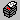

The RSF Main toolbar
By default the main toolbar is situated at the top of the main window. It can however be placed at the bottom or on the left- or right-hand side of the main window by clicking on the perforated left-hand side of the toolbar and dragging it to the preferred location.
On the left, next to the new design button, a small number is displayed. This is the current selected markup for discount. This number can be changed at any time by pressing keys F1 to F6.
The first group of buttons manage the designs in the system. See also the Designs section.
The next three groups of buttons add or insert items to the current design. See also the Designs section.
Scroll or search through all the open designs:
| Move to the previous open design. | |
| Move to the next open design. | |
| Find a particular design. | |
|  | Print a quotation and/or cutlist of the currently selected design. |
| Allocate material from stock to the current design. | |
| Return offcuts to stock. |